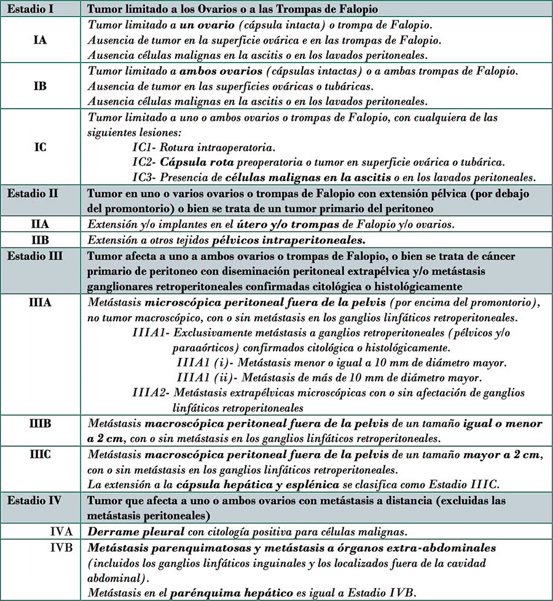

Cáncer de Ovario

3.7 Estadificación
El sistema de estadificación más utilizado en el cáncer de ovario es la de la Federation International of Gynecologic Oncologists (FIGO), que es una clasificación que se realiza tras la citorreducción tumoral (siguiente tabla).
Estadificación FIGO del carcinoma de ovario 2014.
